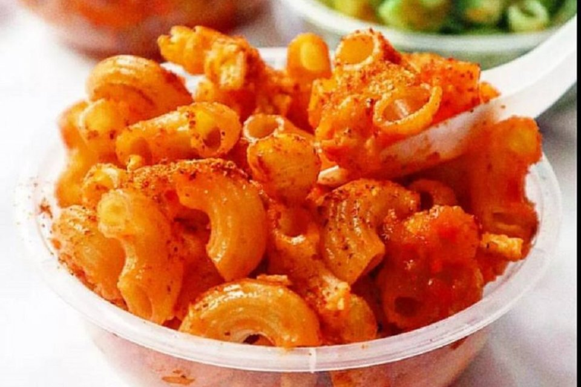

Perkenalkan nama saya Muhammad Sulaiman Effendy bisa di panggil endy saya lahir di Banjarbaru saya bertiga bersaudara. sekarang saya sekarang sedang menempa di perkulihan dengan jurusan teknik informatika di Universitas Islam Kalimantan Muhammad Arsyd Al-Banjari
saya suka berdagang bermacam-macam dagangan yang pernah saya jual seperti berikut
contoh gambar
klik di sini jika ingin tau sejarah telur gulung

klik di sini jika ingin tau cara membuat maklor
klik di sini jika ingin tau asal usul cireng